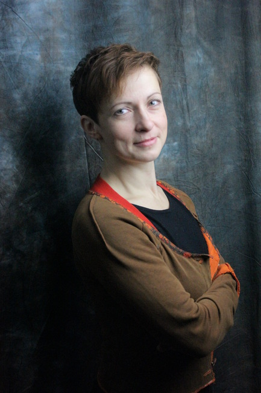
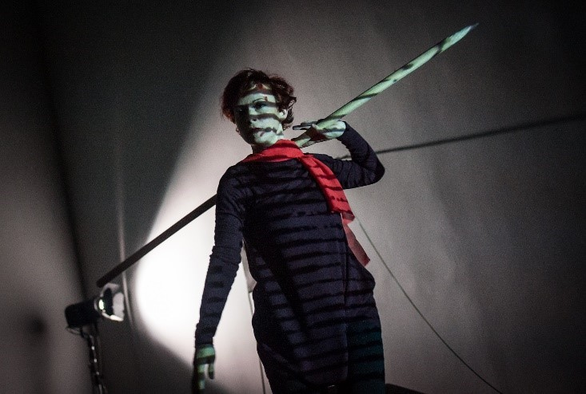
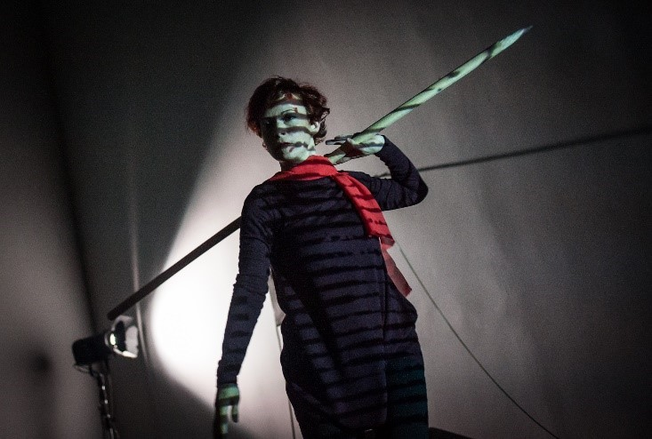
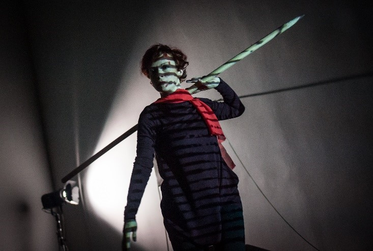

 


 


Cześć, nazywam się Olha Kebas
Taniec współczesny jest moją pasją
Jestem menedżerką kultury i wykładowcą z 20-letnim doświadczeniem w dziedzinie kultury i edukacji. Wspólnie z partnerami zrealizowaliśmy szereg projektów kulturalnych zarówno w Ukrainie, jak i w Polsce. Jako reżyserka i performerka prezentuję własne projekty na międzynarodowych festiwalach. Prowadzę zajęcia z tańca współczesnego, performansu i improwizacji. Jako doktorantka Lwowskiego Uniwersytetu Narodowego im. Iwana Franki zajmuję się pracą naukową, badaniem tańca współczesnego.
Download CV Download portfolio